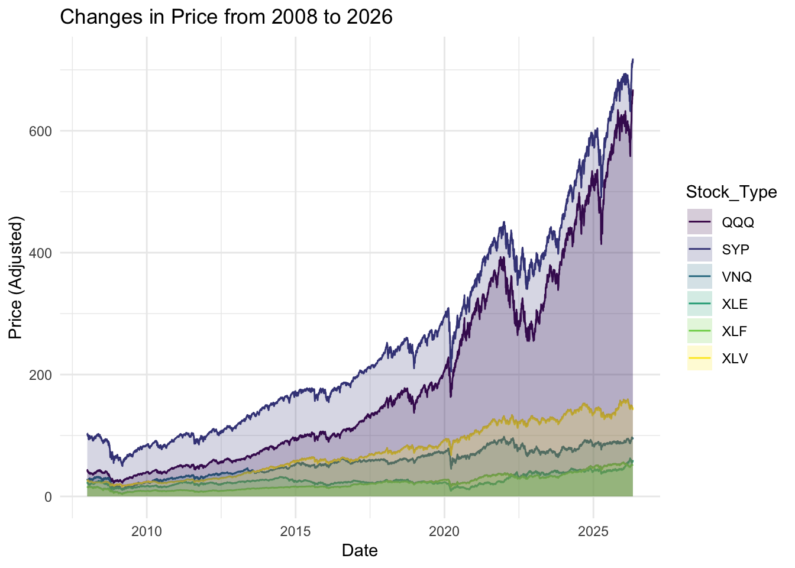
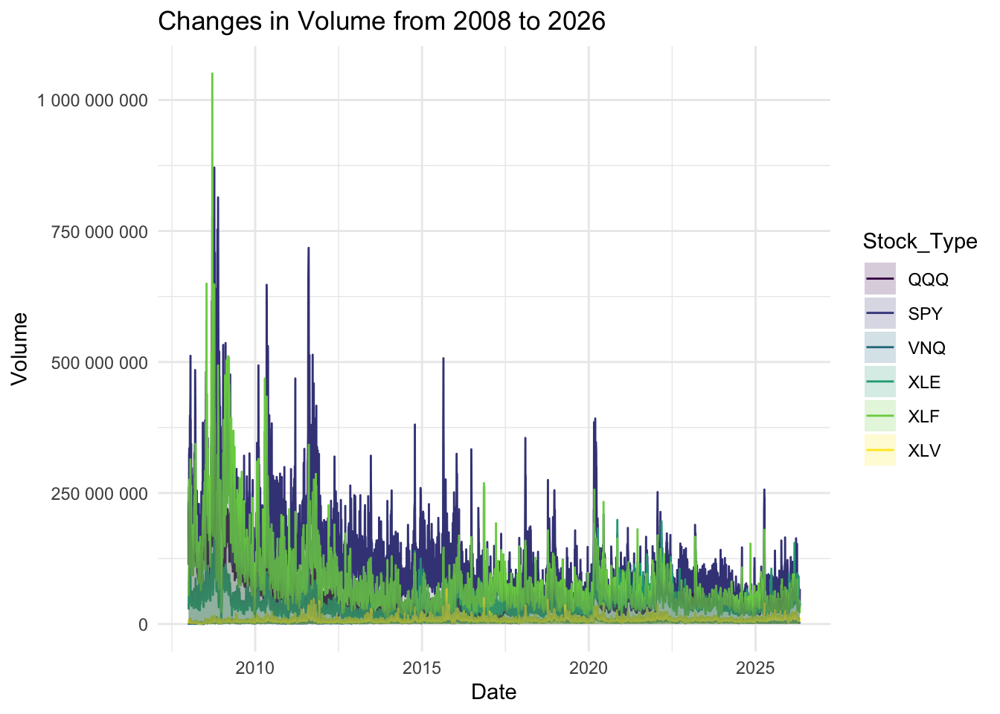
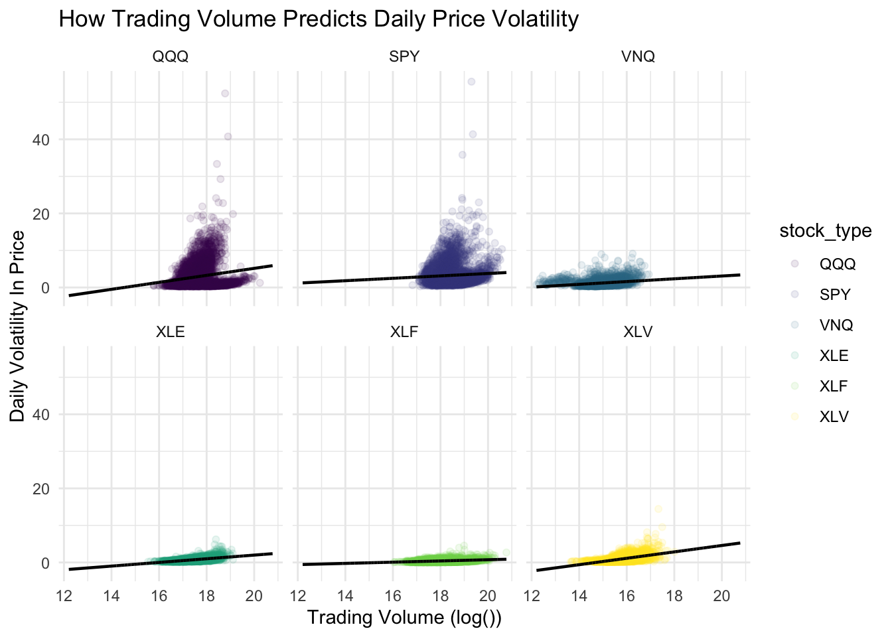

Trading Volatility and Volume During Financial Crises across industry ETFs
Abstract:
This research project will look at exploring the relationship between the daily volatility in price in different industry’s Exchange Traded Funds (ETFs), and how trading volume impacts it during financial crises. The data was taken from the ‘quantmod()’ package, which scrapes data Price and Volume data from YahooFinance. There is strong statistical evidence showing positive correlation between Volume traded and Daily Price changes in an ETF. This conclusion was further explored through visualizations of Volume during financial crises.
Relevant Visualizations:
One of the key motivations for this project was going beyond price changes to isolate volatility in the markets. A key factor that moves markets are news and macroeconomic conditions. Thus, I want to show these market conditions and volatility across industries, not only in prices, but also in Volume traded.
My expectation is that Volume will be strongly correlated with price, as volume is the mechanism that moves price (Supply and Demand), yet, what ultimatly is affected before price (hypothesis) is volume. Thus, the reason I make a distinction and want to statistically test, as well as visualize it.
Since most volatility charts are shown through changes in price in the media and in intro to finance classes, the first visualization is the change in price. I have taken the time period from January 2008 to May 4th (deadline of this project), as this time period lets us explore two financial crises; the 2008 financial crisis and the 2020 Covid-19 pandemic.
## comparing them through time: ggplot(data = stocks_long, aes(x = start_date, y = Price)) +geom_line(aes(colour = Stock_Type)) +geom_area(aes(fill = Stock_Type), alpha =0.2, position ="identity") +theme_minimal() +scale_colour_viridis_d() +scale_fill_viridis_d() +labs(title ="Changes in Price from 2008 to 2026",y ="Price (Adjusted)",x ="Date")

Looking only at price, the visual correlation between QQQ (tech within the S&P) and the S&P 500 is close. This can be explained, as about 40% of the weight within the S&P 500 is only tech stocks.
Volatility meassures:
ggplot(data = stocks_volume, aes(x = start_date, y = Volume)) +geom_line(aes(colour = Stock_Type)) +geom_area(aes(fill = Stock_Type), alpha =0.2, position ="identity") +theme_minimal() +scale_colour_viridis_d() +scale_fill_viridis_d() +scale_y_continuous(labels =label_number()) +labs(title ="Changes in Volume from 2008 to 2026",y ="Volume",x ="Date")

When looking at the volume, even as the y-axis scale changes from price to number of trades (definition of volume), the correlation is still there, although the gap between the two seems to be wider. There is much more volume traded with the S&P 500 than in QQQ. This could be due to the fact that less people own QQQ than the S&P 500, or that investors are more confident in keeping QQQ than S&P 500 as a whole, and are thus less responsive to market movements.
Looking at the Model (Correlation between Volatility & Volume)
When building the model, we take the log version of volume, as it is a highly skewed variable, and we are trying to not violate model assumptions.
mod |>tidy() |>pander()
term
estimate
std.error
statistic
p.value
(Intercept)
-13.71
0.7649
-17.93
1.74e-71
log_volume
0.9438
0.04332
21.78
2.462e-104
stock_typeSPY
10.99
1.148
9.571
1.146e-21
stock_typeVNQ
9.308
1.051
8.859
8.56e-19
stock_typeXLE
5.798
1.203
4.819
1.45e-06
stock_typeXLF
11.15
1.098
10.15
3.623e-24
stock_typeXLV
1.012
1.143
0.8851
0.3761
log_volume:stock_typeSPY
-0.6188
0.06345
-9.752
1.958e-22
log_volume:stock_typeVNQ
-0.5687
0.06453
-8.814
1.281e-18
log_volume:stock_typeXLE
-0.4487
0.06876
-6.526
6.886e-11
log_volume:stock_typeXLF
-0.7788
0.06168
-12.63
1.93e-36
log_volume:stock_typeXLV
-0.07954
0.06884
-1.155
0.248
## mod viz ggplot(data = stocks_long, aes(x = log_volume, y = volatility)) +scale_colour_viridis_d() +geom_point(aes(colour = stock_type), alpha =0.10) +geom_line(data = mod_pred, aes(x = log_volume, y = predicted), linewidth =0.8) +facet_wrap(~ stock_type) +theme_minimal() +labs(y ="Daily Volatility In Price",x ="Trading Volume (log())",title ="How Trading Volume Predicts Daily Price Volatility")

Through the model output and the visualization, we can see that there is evidence of a positive linear relationship between daily volatility in price and trading volume. This supports the idea that volume can be used as an indicator for volatility in markets; the greater the volume, the more volatility there is in terms of price change per day.
QQQ and SPY seem to have different behaviors compared to the other ETFs, which makes sense as the S&P 500 is highly responsive to the market, and QQQ is highly correlated to the S&P 500.
Regarding the interaction term, I wanted to test of the effects of volume were different for each industry, which does seem to be the case. The higher the volume affects each industry differently. Our base group being QQQ, the coefficients are negative, which indicate that the effects are on average lower for the industries that aren’t QQQ.